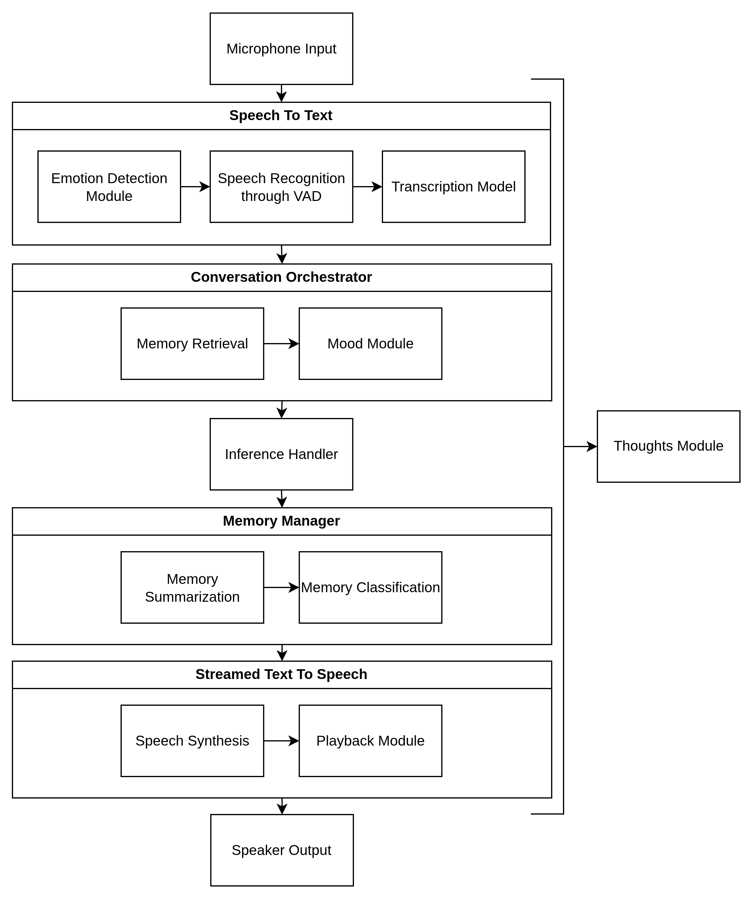

IA & ML
Aiired
Python
llama.cpp
LLM
Agents
Description
Aiired est un projet qui vise à émuler un système cognitif alimenté par des LLMs locaux. Il combine une entrée/sortie par la voix, une mémoire vectorielle, et des agents spécialisés pour le raisonnement, la récupération de mémoire et l'exécution de tâches entièrement sur une machine locale.
Dépôt Github privé, veuillez me contacter pour plus d'informations.
